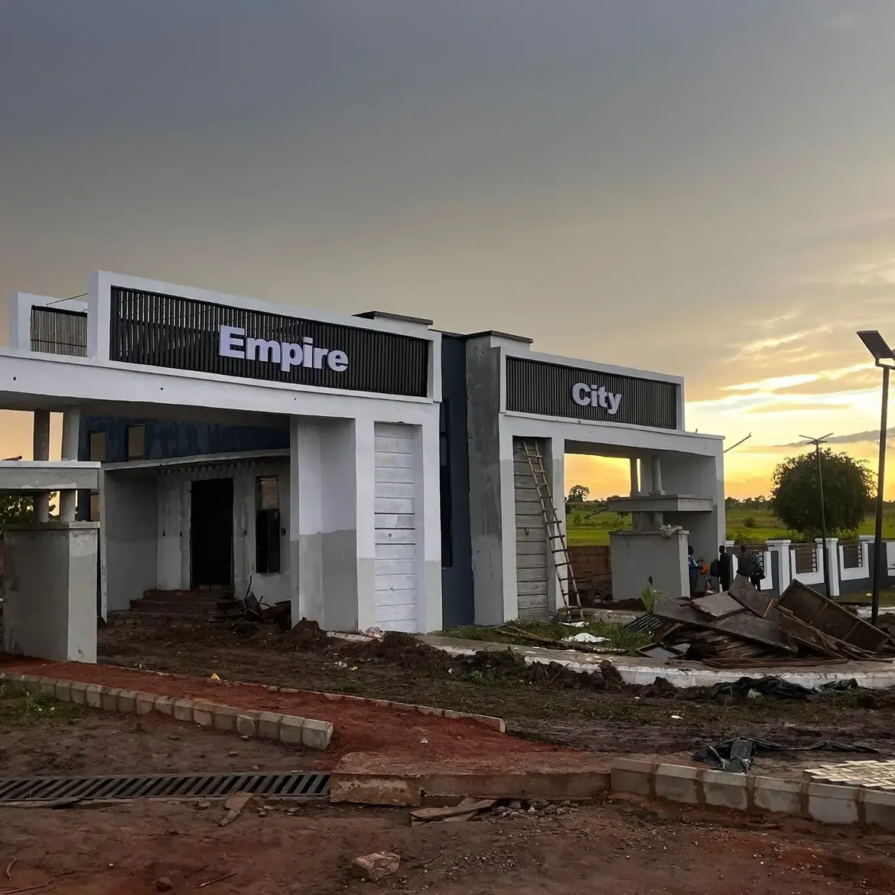

Photographed as delivered.
No staging, no filters. Ceilings, exteriors and interiors from recent Classik Finishes jobs.
Gallery

No staging, no filters. Ceilings, exteriors and interiors from recent Classik Finishes jobs.
Gallery